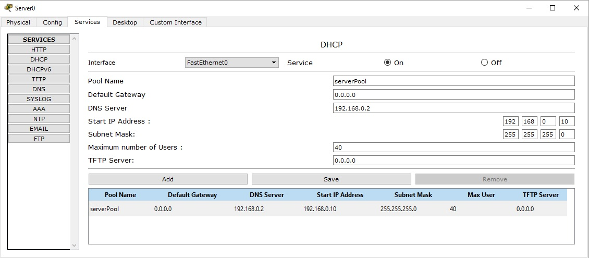
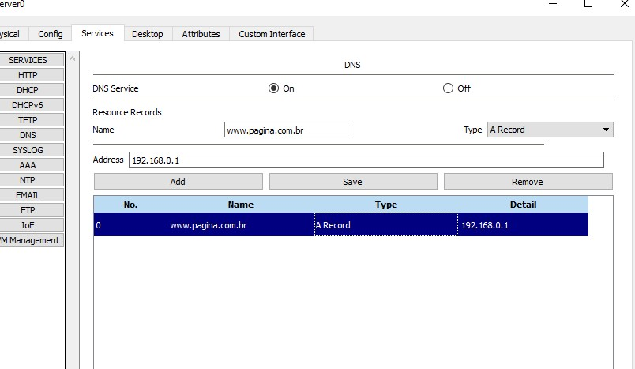

Serviços de Rede
Este site oferece uma visão detalhada dos principais serviços de rede, configurados utilizando o software Cisco Packet Tracer, configurado de acordo como o cliente quiser.
A tabela de valores com cada tipo de rede:

Como funciona um sistema DHCP
Um servidor DHCP é um dispositivo ou software que atribui automaticamente endereços IP e configurações de rede a dispositivos conectados. Ele simplifica o processo de configuração da rede, permitindo que os dispositivos obtenham suas informações de rede de forma automática, em vez de configurá-las manualmente.
Funcionamento
- Descoberta: O cliente DHCP envia uma mensagem para encontrar servidores disponíveis.
- Oferta: O servidor responde com um endereço IP e configurações.
- Solicitação: O cliente escolhe uma oferta e solicita o endereço.
- Confirmação: O servidor confirma a atribuição do IP.
As vantagens
- Facilidade de Gerenciamento: Reduz a necessidade de configuração manual.
- Eficiência: Atribui endereços IP dinamicamente e reutiliza-os
- Flexibilidade: Permite conexões e desconexões rápidas de dispositivos.
O uso de servidores DHCP é comum em redes de todos os tamanhos, desde residenciais até corporativas.
Aqui a baixo temos uma imagem de uma configuração DHCP que a empresa configurou
Essa imagem é a configuração do DHCP
Como funciona um sistema DNS
O sistema DNS (Domain Name System) é responsável por traduzir nomes de domínio (como www.exemplo.com) em endereços IP (como 192.0.2.1), que são utilizados pelos computadores para localizar e se conectar aos servidores na Internet. Em resumo, o DNS é como uma "agenda telefônica" da internet que converte nomes fáceis de lembrar para os humanos em números que as máquinas usam para se comunicar.
Funcionamento
- Descoberta: O cliente (navegador) envia uma consulta DNS para encontrar o endereço IP de um domínio (ex: www.google.com).
- Oferta: O servidor DNS responde com o endereço IP correspondente ao domínio solicitado
- Solicitação: O cliente utiliza o endereço IP recebido para se conectar ao servidor do domínio.
- Confirmação: O servidor DNS confirma o endereço IP, permitindo que o cliente acesse o servidor e receba os dados.
As vantagens
- Facilidade de Gerenciamento: Permite que os usuários usem nomes de domínio em vez de endereços IP complexos.
- Eficiência: Armazena consultas em cache, acelerando futuras resoluções de nomes.
- Flexibilidade: O DNS é distribuído, permitindo que a internet cresça sem sobrecarregar servidores centrais.
O DNS é usado sempre que você acessa um serviço na internet, pois ele traduz nomes de domínio em endereços IP.
Aqui a baixo temos uma imagem de uma configuração DNS que a empresa configurou
Essa imagem é a configuração do DNS
Como funciona um sistema HTTP
O HTTP (Protocolo de Transferência de Hipertexto, do inglês HyperText Transfer Protocol) é um protocolo de comunicação que define como os dados são solicitados e transferidos entre um cliente (como um navegador) e um servidor na web. Ele é usado principalmente para transmitir documentos em formato HTML, mas também pode transferir imagens, vídeos, arquivos de áudio, e outros recursos da web.
Funcionamento
- Descoberta: O navegador inicia uma conexão HTTP/HTTPS com o servidor usando o endereço IP obtido pelo DNS.
- Oferta: O servidor web responde, confirmando que está pronto para receber a solicitação.
- Solicitação: O navegador faz uma solicitação HTTP, pedindo recursos (como páginas, imagens).
- Confirmação: O servidor responde com os dados solicitados (como a página HTML) e um código de status (ex: 200 OK).
As vantagens
- Facilidade de Gerenciamento: O HTTP é fácil de implementar e amplamente suportado.
- Eficiência: Com o HTTPS, a comunicação é criptografada, garantindo segurança na troca de dados.
- Flexibilidade: Suporta a transferência de diversos tipos de recursos, como HTML, imagens, vídeos, etc.
HTTP/HTTPS é essencial para toda navegação na web, transmissão de dados entre cliente e servidor, formulários, transações online e a comunicação entre sistemas por meio de APIs.
Aqui a baixo temos uma imagem de uma configuração DNS que a empresa configurou
Essa imagem é a configuração do HTTP